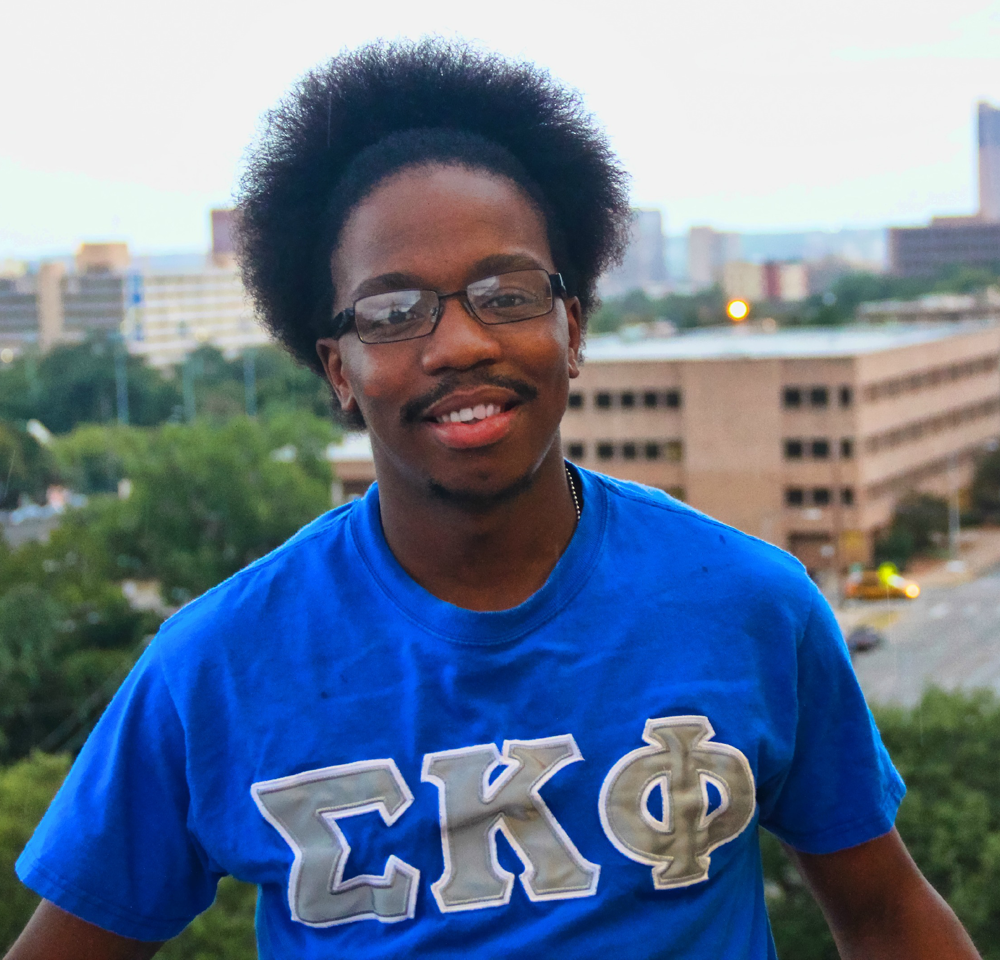
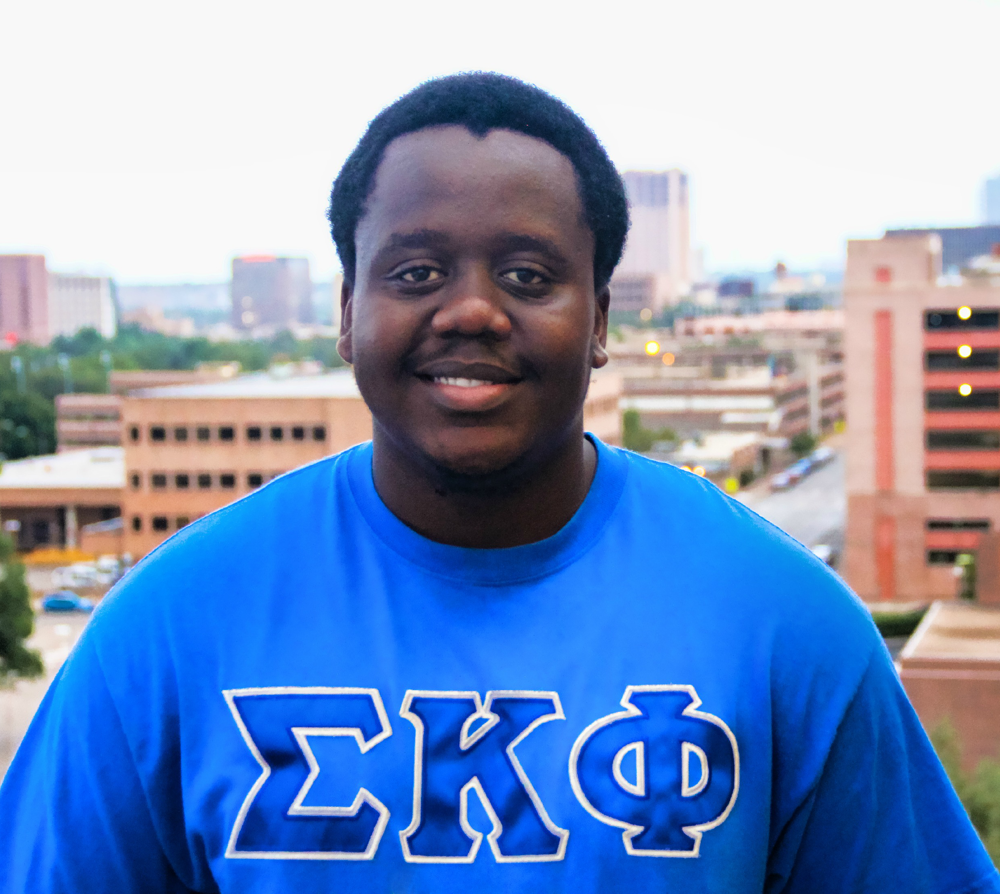

Officers
President
 Name: Chigozi C. Yejekwe
Year: Senior
Major: Computer Science; Biology
Hometown: Chicago, IL
Email: Cyejekwe11@utexas.edu
Originally born in Nigeria and moved to the U.S. when I was 4 and grew up in Chicago and moved to Austin to attend the University of Texas – Austin. Some of my favorite shows include How I Met Your Mother, Breaking Bad, Walking Dead, and Family Guy. Some of my favorite hobbies include sports, reading, and hanging with my bros and my favorite teams are the Green Bay Packers, Chicago Blackhawks, the Chicago Bulls, and of course, the Texas Longhorns. HOOK ‘EM!
Name: Chigozi C. Yejekwe
Year: Senior
Major: Computer Science; Biology
Hometown: Chicago, IL
Email: Cyejekwe11@utexas.edu
Originally born in Nigeria and moved to the U.S. when I was 4 and grew up in Chicago and moved to Austin to attend the University of Texas – Austin. Some of my favorite shows include How I Met Your Mother, Breaking Bad, Walking Dead, and Family Guy. Some of my favorite hobbies include sports, reading, and hanging with my bros and my favorite teams are the Green Bay Packers, Chicago Blackhawks, the Chicago Bulls, and of course, the Texas Longhorns. HOOK ‘EM!
Vice President
 Name: Matthew L. B. Thomas Year: Senior Major: Chemistry Hometown: Houston, TX Email: Mthom0702@yahoo.com Houston bred and raised. Currently enjoying my Senior year at the University of Texas-Austin. It has definitely been a great experience going to school here. Once I graduate, I hope to work as a chemist for a company because I love being in the lab, synthesizing new materials.
Treasurer
 Name: Ronnie Byaruhanga Year: Junior Major: Actuarial Science Hometown: Dallas, TX Email: ronniebyaruhanga@utexas.edu I was born and raised in Uganda up until the age of 12 before moving to Dallas, TX, where I’ve lived ever since. I consider myself both Ugandan and Texan because both environments helped raise me and played a huge role in shaping who I am today. I love to both play and watch tennis and basketball and I am a huge fan of the European Soccer League.